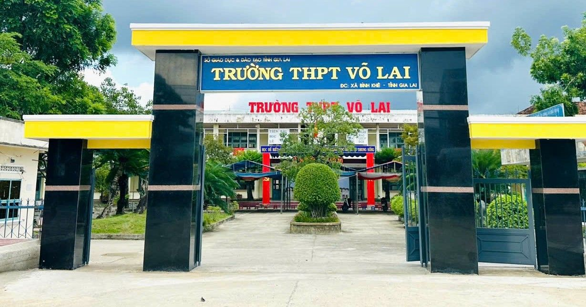
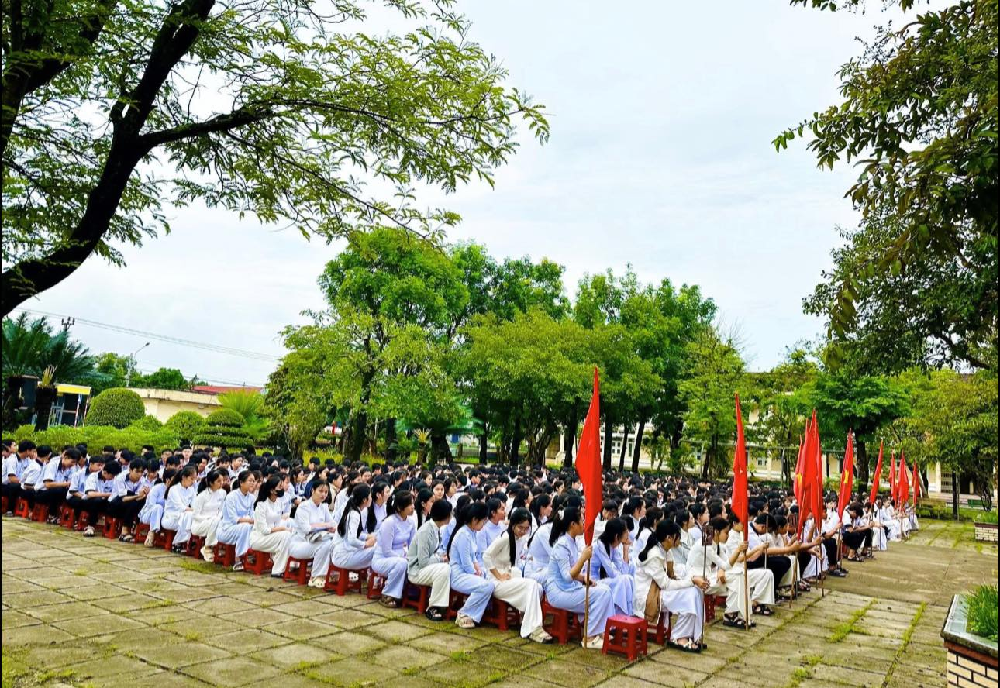
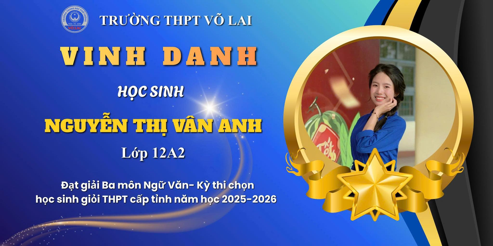
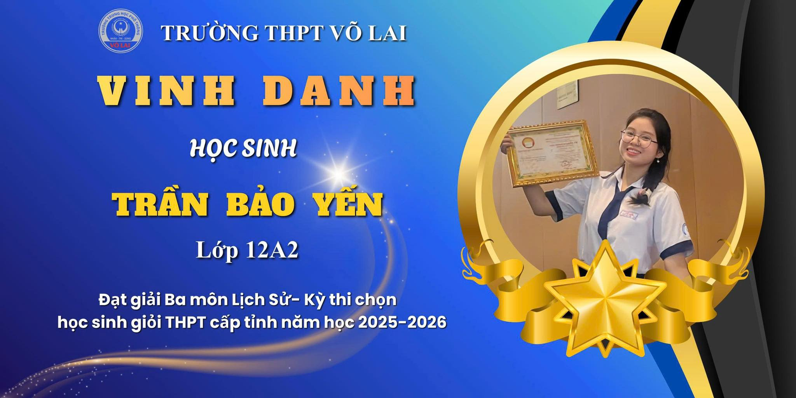
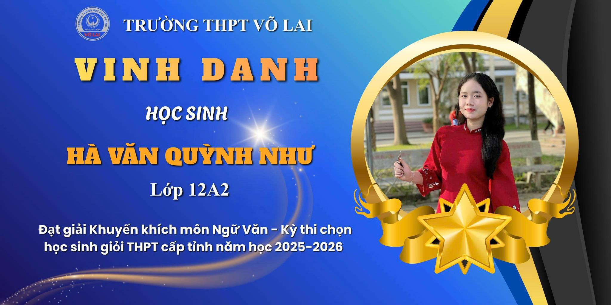
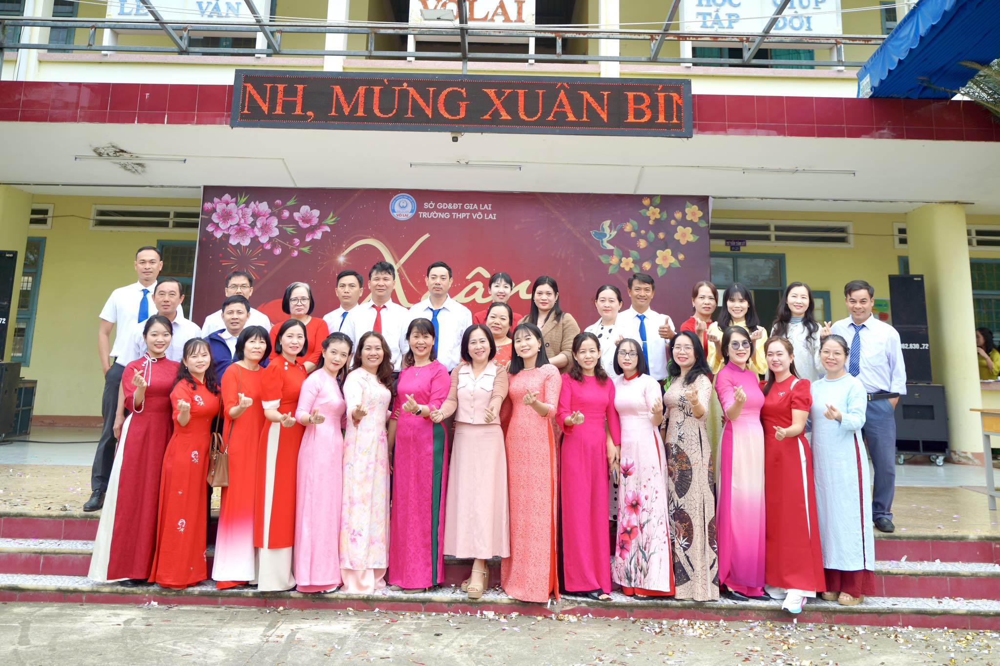
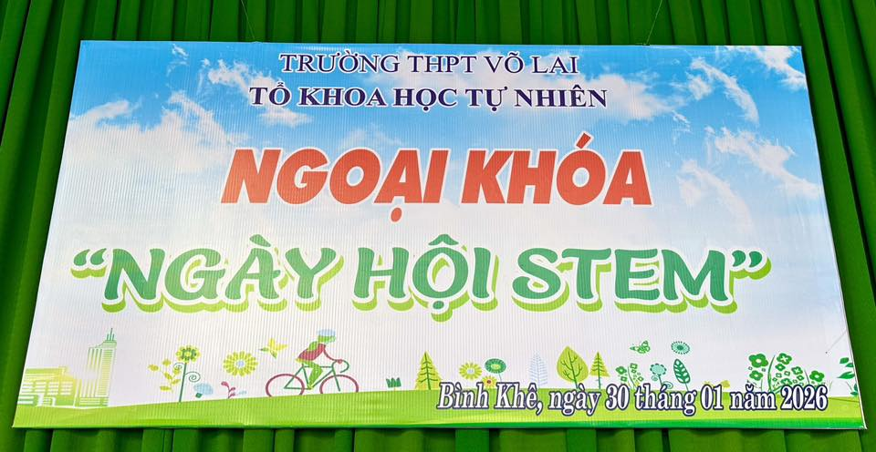
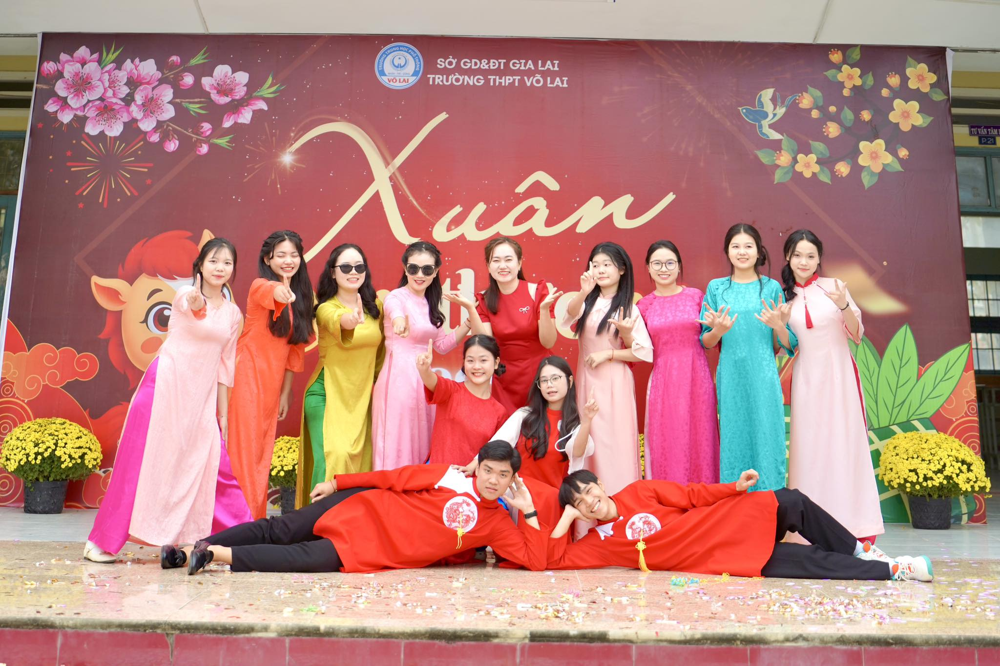
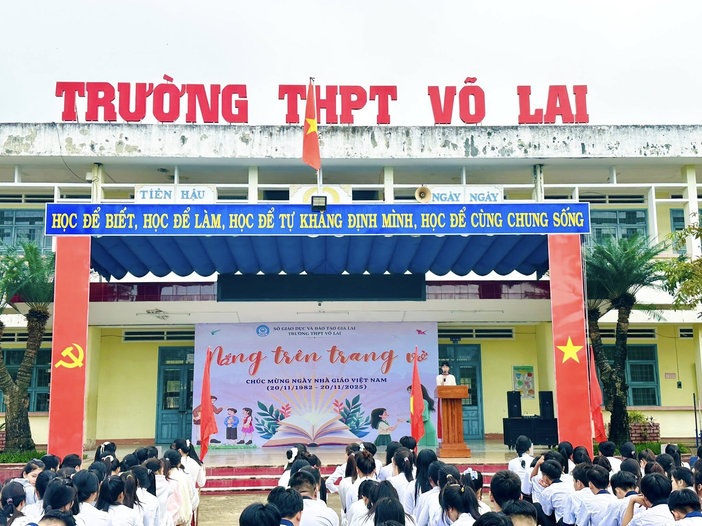

Nơi chắp cánh ước mơ
Trường THPT Võ Lai là một môi trường giáo dục hiện đại, nơi học sinh được phát triển toàn diện về kiến thức, kỹ năng và nhân cách. Với phương châm lấy học sinh làm trung tâm, nhà trường luôn nỗ lực đổi mới phương pháp giảng dạy nhằm khơi dậy niềm đam mê học tập và sáng tạo.
Không chỉ chú trọng đến thành tích học tập, trường còn tạo điều kiện để học sinh tham gia các hoạt động ngoại khóa, giúp rèn luyện kỹ năng sống và xây dựng sự tự tin trong cuộc sống.

Khuôn viên trường được xây dựng khang trang, sạch đẹp, tạo nên không gian học tập thân thiện
và gần gũi. Môi trường xanh – sạch – đẹp giúp học sinh luôn cảm thấy thoải mái và hứng thú
trong mỗi giờ học.
Các phòng học được trang bị đầy đủ cơ sở vật chất, đáp ứng nhu cầu học tập và giảng dạy hiện đại.
Nhà trường luôn chú trọng đầu tư để mang lại điều kiện tốt nhất cho học sinh.
   
Trong nhiều năm qua, Trường THPT Võ Lai đã đạt được nhiều thành tích đáng tự hào trong giảng dạy
và học tập. Tỷ lệ học sinh tốt nghiệp luôn ở mức cao, nhiều em đạt giải trong các kỳ thi học sinh giỏi.
Những thành tích này là minh chứng cho sự nỗ lực không ngừng của thầy và trò nhà trường.
  
“THPT Võ Lai không chỉ là nơi học tập mà còn là nơi giúp em trưởng thành
và theo đuổi ước mơ của mình.”
Năm phát triển Học sinh % Tốt nghiệp 📍 Trường THPT Võ Lai 📞 0256 3884 160 📧 thptvolai.gialai.edu.vnThành tích nổi bật
Giá trị cốt lõi
Đội ngũ giáo viên
Hoạt động tiêu biểu
Cảm nhận học sinh
0
0
0
Liên hệ